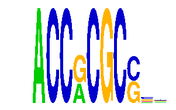

family_6 |
|---|
|  |
| Download PWM |
| Download instances (motifs) |
| Show motif distribution |
Query_ID | Query_Consensus | Subject_Name | Source_DB | Subject_ID | Length | Orientation | Offset | Divergence | Overlap | Subject_Consensus |
|---|---|---|---|---|---|---|---|---|---|---|
| family_6 | ACCGCGCCNN | WYAAANNRNNNGCG | JASPAR | PF0126 | 14 | reverse-complement | 4 | 0.469 | 6 | TTAAARNGSCNGCG |
| family_6 | ACCGCGCCNN | CCAATNNSNNNGCG | JASPAR | PF0104 | 14 | reverse-complement | 4 | 0.518 | 6 | CCAATSRGNGNGCG |
| family_6 | ACCGCGCCNN | MCAATNNNNNGCG | JASPAR | PF0110 | 13 | reverse-complement | 4 | 0.579 | 6 | CCAATSNGNNGCG |
Sequence | Start_position (from start) | Start_position (from end) | Average conservation | Best conservation score | Instance_with_best_CS | Best_Z-score | Instance_with_best_ZS | Strand |
|---|---|---|---|---|---|---|---|---|
| chr13:58229014-58230067 | 290 | 300 | 0.8163 | 1 | ACCRCGCS.. | 34.624588 | ACCRCGCS.. | 1 |
| chr4:134090377-134091582 | 441 | 451 | 0.001 | 0.002 | ACCRCGCS.. | 34.624588 | ACCRCGCS.. | 1 |
| chr4:135690367-135691895 | 1019 | 1029 | 0.0398 | 0.058 | ACCRCGCS.. | 34.624588 | ACCRCGCS.. | -1 |
| chr1:184212022-184213294 | 380 | 390 | 0.0652 | 0.139 | ACCRCGCS.. | 34.624588 | ACCRCGCS.. | 1 |
| chr11:90110432-90111615 | 237 | 247 | 0.1782 | 0.544 | ACCRCGCS.. | 34.624588 | ACCRCGCS.. | -1 |
| chr15:80085540-80086571 | 571 | 581 | 0.9947 | 1 | ACCRCGCS.. | 34.624588 | ACCRCGCS.. | -1 |
| chr2:13495561-13497078 | 434 | 444 | 0.3042 | 0.801 | ACCRCGCS.. | 34.624588 | ACCRCGCS.. | 1 |
| chr17:71532156-71534455 | 912 | 922 | 0.0018 | 0.003 | ACCRCGCS.. | 34.624588 | ACCRCGCS.. | -1 |
| chr5:124990030-124991971 | 1342 | 1352 | 0.0067 | 0.019 | ACCRCGCS.. | 34.624588 | ACCRCGCS.. | -1 |
| chr7:4740110-4741411 | 595 | 605 | 0.0288 | 0.124 | ACCRCGCS.. | 34.624588 | ACCRCGCS.. | -1 |
| chr2:143740901-143742108 | 76 | 86 | 0.0124 | 0.032 | ACCRCGCS.. | 34.624588 | ACCRCGCS.. | -1 |
| chr7:52650238-52651430 | 639 | 649 | 0.9998 | 1 | ACCRCGCS.. | 34.624588 | ACCRCGCS.. | 1 |
| chr14:56196890-56197944 | 601 | 611 | 0.6059 | 0.835 | ACCRCGCS.. | 34.624588 | ACCRCGCS.. | -1 |
| chrX:49965177-49967832 | 1574 | 1584 | 0.0015 | 0.007 | ACCRCGCS.. | 34.624588 | ACCRCGCS.. | 1 |
| chr10:117539776-117541010 | 610 | 620 | 0.726 | 1 | ACCRCGCS.. | 34.624588 | ACCRCGCS.. | -1 |
| chr14:63740951-63741975 | 311 | 321 | 0.0706 | 0.177 | ACCRCGCS.. | 34.624588 | ACCRCGCS.. | -1 |
| chr9:69301096-69302504 | 1177 | 1187 | 0.8171 | 0.995 | ACCRCGCS.. | 34.624588 | ACCRCGCS.. | -1 |
| chr3:33918676-33920245 | 548 | 558 | 0.9109 | 0.955 | ACCRCGCS.. | 34.624588 | ACCRCGCS.. | -1 |
| chr15:82183995-82185517 | 697 | 707 | 0.0633 | 0.631 | ACCRCGCS.. | 34.624588 | ACCRCGCS.. | -1 |
| chr13:55694148-55695173 | 261 | 271 | 0.0038 | 0.024 | ACCRCGCS.. | 34.624588 | ACCRCGCS.. | -1 |
| chr2:50151350-50152597 | 818 | 828 | 0.0058 | 0.033 | ACCRCGCS.. | 34.624588 | ACCRCGCS.. | 1 |
| chr10:74979202-74981565 | 1569 | 1579 | 0.9911 | 0.998 | ACCRCGCS.. | 34.624588 | ACCRCGCS.. | -1 |
| chr9:50411277-50412305 | 744 | 754 | 0.5461 | 0.782 | ACCRCGCS.. | 34.624588 | ACCRCGCS.. | 1 |
| chr17:47641458-47642679 | 595 | 605 | 0.2203 | 0.529 | ACCRCGCS.. | 34.624588 | ACCRCGCS.. | 1 |
| chr14:76814127-76816537 | 142 | 152 | 0.1348 | 0.617 | ACCRCGCS.. | 34.624588 | ACCRCGCS.. | -1 |
| chr3:94690015-94691045 | 651 | 661 | 0.0033 | 0.01 | ACCRCGCS.. | 34.624588 | ACCRCGCS.. | -1 |
| chr11:51912115-51913133 | 54 | 64 | 0.6372 | 0.854 | ACCRCGCS.. | 34.624588 | ACCRCGCS.. | 1 |
| chrX:12857776-12858913 | 355 | 365 | 0.8115 | 1 | ACCRCGCS.. | 34.624588 | ACCRCGCS.. | -1 |
| chr11:74536649-74538624 | 1235 | 1245 | 0.9998 | 1 | ACCRCGCS.. | 34.624588 | ACCRCGCS.. | 1 |
| chr11:88578726-88580365 | 1385 | 1395 | 0.5113 | 0.774 | ACCRCGCGGR | 34.624588 | ACCRCGCS.. | 1 |
| chr5:77379568-77380587 | 577 | 587 | 0.0351 | 0.13 | ACCRCGCS.. | 34.624588 | ACCRCGCS.. | -1 |
| chr17:45709225-45710607 | 577 | 587 | 0.0915 | 0.596 | ACCRCGCGGR | 34.624588 | ACCRCGCS.. | 1 |
| chr7:52378720-52380072 | 1016 | 1026 | 0.0039 | 0.016 | ACCRCGCS.. | 34.624588 | ACCRCGCS.. | 1 |
| chr6:146590723-146591742 | 303 | 313 | 0.2716 | 0.607 | ACCRCGCS.. | 34.624588 | ACCRCGCS.. | 1 |
| chr1:58448987-58450029 | 506 | 516 | 0.0004 | 0.001 | ACCRCGCS.. | 34.624588 | ACCRCGCS.. | -1 |
| chr7:139788616-139789642 | 388 | 398 | 0.5822 | 0.813 | ACCRCGCS.. | 34.624588 | ACCRCGCS.. | 1 |
| chr12:81066179-81067244 | 362 | 372 | 0.0012 | 0.004 | ACCRCGCS.. | 35.708115 | ACCRCGCGGR | 1 |
| chr11:120094281-120096389 | 1869 | 1879 | 0.0302 | 0.096 | ACCRCGCS.. | 34.624588 | ACCRCGCS.. | 1 |
| chr8:87369411-87371096 | 1576 | 1586 | 0.9998 | 1 | ACCRCGCS.. | 34.624588 | ACCRCGCS.. | 1 |
| chr6:47600537-47601887 | 731 | 741 | 0.0423 | 0.047 | ACCRCGCS.. | 34.624588 | ACCRCGCS.. | 1 |
| chr7:106616155-106617481 | 766 | 776 | 0.7583 | 0.998 | ACCRCGCS.. | 34.624588 | ACCRCGCS.. | 1 |
| chr3:101407393-101409359 | 745 | 755 | 0.5178 | 0.993 | ACCRCGCS.. | 34.624588 | ACCRCGCS.. | -1 |
| chr12:81743966-81745841 | 1817 | 1827 | 0.0007 | 0.003 | ACCRCGCS.. | 34.624588 | ACCRCGCS.. | 1 |
| chr7:52346522-52347877 | 1147 | 1157 | 0.0116 | 0.016 | ACCRCGCS.. | 34.624588 | ACCRCGCS.. | -1 |
| chr8:97875814-97877346 | 663 | 673 | 0.0185 | 0.03 | ACCRCGCS.. | 34.624588 | ACCRCGCS.. | 1 |
| chr18:61714978-61716748 | 107 | 117 | 0.1887 | 0.476 | ACCRCGCS.. | 34.624588 | ACCRCGCS.. | 1 |
| chr10:61802690-61803713 | 477 | 487 | 0.2447 | 0.957 | ACCRCGCS.. | 34.624588 | ACCRCGCS.. | -1 |
| chr2:112101743-112102750 | 634 | 644 | 0.0001 | 0.001 | ACCRCGCS.. | 34.624588 | ACCRCGCS.. | 1 |
| chr10:79446286-79448412 | 1328 | 1338 | 0.189 | 0.223 | ACCRCGCS.. | 34.624588 | ACCRCGCS.. | -1 |
| chr17:26698084-26699253 | 686 | 696 | 0.0006 | 0.001 | ACCRCGCS.. | 34.624588 | ACCRCGCS.. | -1 |
| chr10:90643849-90644870 | 394 | 404 | 0.9761 | 0.983 | ACCRCGCS.. | 34.624588 | ACCRCGCS.. | -1 |
| chr17:35195748-35196783 | 231 | 241 | 0.6987 | 1 | ACCRCGCS.. | 34.624588 | ACCRCGCS.. | -1 |
| chr11:30097458-30098981 | 899 | 909 | 0.4358 | 1 | ACCRCGCGGR | 34.624588 | ACCRCGCS.. | 1 |
| chr17:71339244-71340270 | 498 | 508 | 0.0036 | 0.006 | ACCRCGCS.. | 34.624588 | ACCRCGCS.. | -1 |
| chr2:26441799-26443028 | 395 | 405 | 0.5358 | 0.588 | ACCRCGCS.. | 34.624588 | ACCRCGCS.. | 1 |
| chr7:6681563-6683403 | 1667 | 1677 | 0.0565 | 0.09 | ACCRCGCS.. | 34.624588 | ACCRCGCS.. | 1 |
| chr4:118781005-118782077 | 282 | 292 | 0.0119 | 0.034 | ACCRCGCS.. | 34.624588 | ACCRCGCS.. | 1 |
| chr1:180298824-180299844 | 144 | 154 | 0.0004 | 0.002 | ACCRCGCS.. | 35.708115 | ACCRCGCGGR | -1 |
| chr11:120209030-120210152 | 198 | 208 | 0.0069 | 0.023 | ACCRCGCS.. | 34.624588 | ACCRCGCS.. | 1 |
| chr2:90744025-90745521 | 1087 | 1097 | 0.6799 | 0.778 | ACCRCGCS.. | 34.624588 | ACCRCGCS.. | 1 |
| chr19:10679708-10680731 | 713 | 723 | 0.0004 | 0.001 | ACCRCGCS.. | 34.624588 | ACCRCGCS.. | 1 |
| chr9:40609369-40610391 | 745 | 755 | 0.9981 | 1 | ACCRCGCS.. | 34.624588 | ACCRCGCS.. | 1 |
| chr15:98815625-98816657 | 140 | 150 | 0.0131 | 0.037 | ACCRCGCS.. | 34.624588 | ACCRCGCS.. | 1 |
| chr10:36856960-36858278 | 1006 | 1016 | 1 | 1 | ACCRCGCS.. | 34.624588 | ACCRCGCS.. | 1 |
| chr11:52159713-52160749 | 266 | 276 | 0.0009 | 0.002 | ACCRCGCS.. | 34.624588 | ACCRCGCS.. | -1 |
| chr1:88255297-88257057 | 1075 | 1085 | 0.0001 | 0.001 | ACCRCGCS.. | 34.624588 | ACCRCGCS.. | -1 |
| chr7:149765851-149766871 | 368 | 378 | 0.1588 | 0.218 | ACCRCGCS.. | 34.624588 | ACCRCGCS.. | 1 |
| chr10:117282418-117283826 | 1024 | 1034 | 0.1506 | 0.783 | ACCRCGCS.. | 34.624588 | ACCRCGCS.. | -1 |
| chr14:21748276-21749459 | 587 | 597 | 0.9966 | 1 | ACCRCGCS.. | 34.624588 | ACCRCGCS.. | 1 |
| chrX:71491085-71492159 | 271 | 281 | 0.0188 | 0.044 | ACCRCGCS.. | 34.624588 | ACCRCGCS.. | 1 |
| chr7:26082309-26083344 | 63 | 73 | 0.0098 | 0.048 | ACCRCGCS.. | 34.624588 | ACCRCGCS.. | 1 |
| chr7:118265359-118266380 | 392 | 402 | 0.0038 | 0.008 | ACCRCGCS.. | 34.624588 | ACCRCGCS.. | 1 |
| chr10:127774430-127775465 | 448 | 458 | 0.5594 | 0.935 | ACCRCGCS.. | 34.624588 | ACCRCGCS.. | -1 |
| chr10:60914541-60915715 | 639 | 649 | 1 | 1 | ACCRCGCS.. | 34.624588 | ACCRCGCS.. | -1 |
| chr4:55361912-55363931 | 1556 | 1566 | 0.0016 | 0.009 | ACCRCGCS.. | 34.624588 | ACCRCGCS.. | -1 |
| chr2:105238669-105239762 | 596 | 606 | 0.9596 | 1 | ACCRCGCS.. | 34.624588 | ACCRCGCS.. | 1 |
| chr17:12961855-12962940 | 323 | 333 | 0.004 | 0.013 | ACCRCGCS.. | 35.708115 | ACCRCGCGGR | 1 |
| chr5:24413419-24414957 | 279 | 289 | 0.0154 | 0.067 | ACCRCGCS.. | 34.624588 | ACCRCGCS.. | -1 |
| chr17:23940217-23941429 | 264 | 274 | 0.0006 | 0.003 | ACCRCGCS.. | 34.624588 | ACCRCGCS.. | -1 |
| chr8:72825746-72827274 | 976 | 986 | 0.063 | 0.207 | ACCRCGCS.. | 34.624588 | ACCRCGCS.. | -1 |
| chr8:131178108-131179181 | 464 | 474 | 0.3182 | 0.419 | ACCRCGCS.. | 34.624588 | ACCRCGCS.. | -1 |
| chrX:159197321-159199790 | 697 | 707 | 0.9942 | 1 | ACCRCGCS.. | 34.624588 | ACCRCGCS.. | 1 |
| chr17:7031986-7033247 | 357 | 367 | 0.6941 | 0.983 | ACCRCGCS.. | 34.624588 | ACCRCGCS.. | -1 |
| chr7:13609059-13610089 | 711 | 721 | 0.9736 | 0.994 | ACCRCGCS.. | 34.624588 | ACCRCGCS.. | -1 |
| chr2:148700390-148701564 | 421 | 431 | 0.0028 | 0.006 | ACCRCGCS.. | 34.624588 | ACCRCGCS.. | 1 |
| chr9:62210593-62212149 | 935 | 945 | 0.0098 | 0.038 | ACCRCGCGGR | 34.624588 | ACCRCGCS.. | 1 |
| chr17:33960739-33961743 | 742 | 752 | 0.1719 | 0.343 | ACCRCGCS.. | 34.624588 | ACCRCGCS.. | 1 |
| chr4:55527365-55528379 | 356 | 366 | 0.2957 | 0.984 | ACCRCGCS.. | 34.624588 | ACCRCGCS.. | 1 |
| chr1:95341171-95342192 | 537 | 547 | 0.0049 | 0.016 | ACCRCGCS.. | 35.708115 | ACCRCGCGGR | 1 |
| chr10:92915803-92916818 | 345 | 355 | 0.084 | 0.245 | ACCRCGCS.. | 34.624588 | ACCRCGCS.. | 1 |
| chr13:58229014-58230067 | 928 | 938 | 0.9986 | 1 | ACCRCGCGGR | 35.708115 | ACCRCGCGGR | -1 |
| chr7:35018454-35019987 | 735 | 745 | 0.0053 | 0.011 | ACCRCGCS.. | 34.624588 | ACCRCGCS.. | 1 |
| chr6:128093324-128094355 | 835 | 845 | 0.0017 | 0.005 | ACCRCGCGGR | 34.624588 | ACCRCGCS.. | 1 |
| chr17:47730525-47731857 | 1305 | 1315 | 0.5934 | 0.987 | ACCRCGCS.. | 34.624588 | ACCRCGCS.. | 1 |
| chr15:96528632-96530184 | 1011 | 1021 | 0.0029 | 0.005 | ACCRCGCS.. | 34.624588 | ACCRCGCS.. | -1 |
| chr4:137023816-137025327 | 682 | 692 | 0.2442 | 0.313 | ACCRCGCS.. | 34.624588 | ACCRCGCS.. | -1 |
| chr7:13507277-13508305 | 412 | 422 | 0.8726 | 1 | ACCRCGCS.. | 34.624588 | ACCRCGCS.. | -1 |
| chr8:42124637-42127430 | 2154 | 2164 | 0.0263 | 0.157 | ACCRCGCS.. | 34.624588 | ACCRCGCS.. | -1 |
| chr1:88423583-88425608 | 3 | 13 | 0.5035 | 1 | ACCRCGCS.. | 34.624588 | ACCRCGCS.. | -1 |
| chr2:154482493-154483522 | 157 | 167 | 0.5381 | 0.989 | ACCRCGCS.. | 34.624588 | ACCRCGCS.. | -1 |
| chr13:49110453-49112185 | 1347 | 1357 | 0.0022 | 0.011 | ACCRCGCS.. | 34.624588 | ACCRCGCS.. | -1 |
| chr14:22650130-22651647 | 356 | 366 | 0.0622 | 0.125 | ACCRCGCS.. | 35.708115 | ACCRCGCGGR | 1 |
| chr13:55422501-55424179 | 681 | 691 | 0.3407 | 0.419 | ACCRCGCS.. | 34.624588 | ACCRCGCS.. | 1 |
| chr2:179776476-179778050 | 818 | 828 | 0.0022 | 0.009 | ACCRCGCGGR | 35.708115 | ACCRCGCGGR | -1 |
| chr3:138105042-138106736 | 1123 | 1133 | 0.0008 | 0.007 | ACCRCGCS.. | 34.624588 | ACCRCGCS.. | -1 |
| chr4:116827543-116828570 | 317 | 327 | 0.9789 | 1 | ACCRCGCS.. | 34.624588 | ACCRCGCS.. | 1 |
| chr10:79604747-79605754 | 369 | 379 | 0.7578 | 0.992 | ACCRCGCS.. | 34.624588 | ACCRCGCS.. | 1 |
| chr12:88606598-88608306 | 1623 | 1633 | 0.0012 | 0.003 | ACCRCGCS.. | 34.624588 | ACCRCGCS.. | -1 |
| chr7:35014299-35015471 | 875 | 885 | 0.8666 | 0.998 | ACCRCGCS.. | 34.624588 | ACCRCGCS.. | -1 |
| chr14:26278978-26280502 | 624 | 634 | 0.9953 | 1 | ACCRCGCS.. | 34.624588 | ACCRCGCS.. | -1 |
| chr6:49212765-49214418 | 775 | 785 | 0.2038 | 0.773 | ACCRCGCS.. | 34.624588 | ACCRCGCS.. | 1 |
| chr9:31018727-31019770 | 731 | 741 | 0.6588 | 0.87 | ACCRCGCS.. | 34.624588 | ACCRCGCS.. | 1 |
| chr2:165979433-165981573 | 1222 | 1232 | 0.0087 | 0.023 | ACCRCGCS.. | 34.624588 | ACCRCGCS.. | 1 |
| chr3:93358636-93359662 | 423 | 433 | 0.0131 | 0.04 | ACCRCGCS.. | 34.624588 | ACCRCGCS.. | -1 |
| chr3:107698365-107699401 | 367 | 377 | 0.0013 | 0.003 | ACCRCGCS.. | 35.708115 | ACCRCGCGGR | 1 |
| chr15:101903979-101905212 | 734 | 744 | 0.0033 | 0.005 | ACCRCGCS.. | 34.624588 | ACCRCGCS.. | 1 |
| chr14:21521620-21523080 | 703 | 713 | 0.0825 | 0.175 | ACCRCGCS.. | 34.624588 | ACCRCGCS.. | -1 |
| chr7:26566251-26567327 | 541 | 551 | 0.0174 | 0.044 | ACCRCGCGGR | 34.624588 | ACCRCGCS.. | 1 |
| chr16:37776865-37777987 | 763 | 773 | 0.025 | 0.091 | ACCRCGCS.. | 34.624588 | ACCRCGCS.. | 1 |
| chr3:153606597-153608381 | 1050 | 1060 | 0.0006 | 0.001 | ACCRCGCS.. | 34.624588 | ACCRCGCS.. | -1 |
| chr1:94369524-94370740 | 714 | 724 | 0.984 | 0.995 | ACCRCGCS.. | 34.624588 | ACCRCGCS.. | 1 |
| chr1:71698756-71700208 | 1117 | 1127 | 0.9949 | 0.999 | ACCRCGCS.. | 34.624588 | ACCRCGCS.. | 1 |
| chr19:10056899-10058185 | 437 | 447 | 0.0002 | 0.001 | ACCRCGCS.. | 34.624588 | ACCRCGCS.. | 1 |
| chr11:120094281-120096389 | 2114 | 2124 | 0.0021 | 0.016 | ACCRCGCGGR | 35.708115 | ACCRCGCGGR | -1 |
| chr4:134023938-134025088 | 1130 | 1140 | 0.9227 | 0.997 | ACCRCGCS.. | 34.624588 | ACCRCGCS.. | 1 |
| chr4:116357864-116359129 | 676 | 686 | 0.0007 | 0.004 | ACCRCGCS.. | 34.624588 | ACCRCGCS.. | 1 |
| chr1:136311896-136313031 | 477 | 487 | 0.0005 | 0.001 | ACCRCGCS.. | 34.624588 | ACCRCGCS.. | -1 |
| chr2:179991194-179993003 | 1331 | 1341 | 0.9998 | 1 | ACCRCGCS.. | 34.624588 | ACCRCGCS.. | 1 |
| chr4:57968162-57969386 | 1137 | 1147 | 0.0031 | 0.007 | ACCRCGCS.. | 34.624588 | ACCRCGCS.. | 1 |
| chr11:120410164-120411207 | 544 | 554 | 0.0053 | 0.01 | ACCRCGCS.. | 34.624588 | ACCRCGCS.. | -1 |
| chr12:55962852-55964027 | 1129 | 1139 | 0.0016 | 0.005 | ACCRCGCS.. | 34.624588 | ACCRCGCS.. | 1 |
| chr10:120333818-120336492 | 2069 | 2079 | 0.0928 | 0.255 | ACCRCGCS.. | 34.624588 | ACCRCGCS.. | 1 |
| chr8:35039219-35040570 | 1010 | 1020 | 0.0009 | 0.003 | ACCRCGCS.. | 34.624588 | ACCRCGCS.. | -1 |
| chr2:71710526-71712031 | 750 | 760 | 0.0101 | 0.028 | ACCRCGCS.. | 34.624588 | ACCRCGCS.. | -1 |
| chr4:116299472-116300498 | 633 | 643 | 0.8576 | 1 | ACCRCGCS.. | 35.708115 | ACCRCGCGGR | -1 |
| chrX:50340909-50342437 | 833 | 843 | 0.1053 | 0.269 | ACCRCGCS.. | 34.624588 | ACCRCGCS.. | -1 |
| chr3:87710113-87711766 | 244 | 254 | 0.0477 | 0.122 | ACCRCGCS.. | 34.624588 | ACCRCGCS.. | 1 |
| chr14:26513250-26514458 | 335 | 345 | 0.3175 | 0.453 | ACCRCGCS.. | 34.624588 | ACCRCGCS.. | -1 |
| chr3:89049967-89050990 | 404 | 414 | 0.0036 | 0.017 | ACCRCGCS.. | 34.624588 | ACCRCGCS.. | 1 |
| chr2:167942445-167943476 | 641 | 651 | 0.0012 | 0.006 | ACCRCGCS.. | 34.624588 | ACCRCGCS.. | 1 |
| chr2:179776476-179778050 | 917 | 927 | 0.2824 | 0.952 | ACCRCGCS.. | 34.624588 | ACCRCGCS.. | 1 |
| chr9:64019894-64022013 | 758 | 768 | 0.035 | 0.092 | ACCRCGCS.. | 34.624588 | ACCRCGCS.. | -1 |
| chr8:72497295-72498410 | 1018 | 1028 | 0.0182 | 0.033 | ACCRCGCS.. | 34.624588 | ACCRCGCS.. | -1 |
| chr8:73196915-73197931 | 54 | 64 | 0.0099 | 0.02 | ACCRCGCS.. | 34.624588 | ACCRCGCS.. | 1 |
| chr7:117102902-117104668 | 568 | 578 | 0.0029 | 0.016 | ACCRCGCGGR | 34.624588 | ACCRCGCS.. | 1 |
| chr7:133952099-133953113 | 519 | 529 | 0.0112 | 0.1 | ACCRCGCS.. | 34.624588 | ACCRCGCS.. | 1 |
| chr9:61761497-61763104 | 882 | 892 | 0.0974 | 0.911 | ACCRCGCS.. | 34.624588 | ACCRCGCS.. | 1 |
| chr4:154865497-154866936 | 824 | 834 | 0.0013 | 0.007 | ACCRCGCS.. | 34.624588 | ACCRCGCS.. | 1 |
| chr2:156600445-156601845 | 1377 | 1387 | 0.0048 | 0.008 | ACCRCGCS.. | 34.624588 | ACCRCGCS.. | 1 |
| chr12:36882765-36883770 | 678 | 688 | 0.0384 | 0.092 | ACCRCGCS.. | 34.624588 | ACCRCGCS.. | 1 |
| chr2:38513539-38514553 | 637 | 647 | 0.0035 | 0.013 | ACCRCGCS.. | 34.624588 | ACCRCGCS.. | 1 |
| chr14:25598342-25599357 | 365 | 375 | 0.757 | 0.989 | ACCRCGCS.. | 34.624588 | ACCRCGCS.. | 1 |
| chr11:30166892-30168016 | 772 | 782 | 0.0744 | 0.106 | ACCRCGCS.. | 34.624588 | ACCRCGCS.. | 1 |
| chr7:13619343-13620381 | 555 | 565 | 0.0004 | 0.002 | ACCRCGCS.. | 34.624588 | ACCRCGCS.. | 1 |
| chr2:168031194-168032552 | 838 | 848 | 0.2989 | 0.492 | ACCRCGCS.. | 34.624588 | ACCRCGCS.. | 1 |
| chr1:95375197-95376633 | 1067 | 1077 | 0.0011 | 0.004 | ACCRCGCS.. | 34.624588 | ACCRCGCS.. | 1 |
| chr5:115607532-115609198 | 405 | 415 | 0.9787 | 1 | ACCRCGCS.. | 34.624588 | ACCRCGCS.. | 1 |
| chr7:52123578-52125877 | 475 | 485 | 0.0005 | 0.001 | ACCRCGCS.. | 34.624588 | ACCRCGCS.. | 1 |
| chr10:20032370-20033422 | 116 | 126 | 0.0067 | 0.02 | ACCRCGCS.. | 34.624588 | ACCRCGCS.. | -1 |
| chr2:156545920-156547577 | 716 | 726 | 0.1489 | 0.404 | ACCRCGCS.. | 34.624588 | ACCRCGCS.. | -1 |
| chr17:13200416-13201670 | 771 | 781 | 0.9811 | 1 | ACCRCGCS.. | 34.624588 | ACCRCGCS.. | 1 |
| chr19:5366609-5367781 | 385 | 395 | 0.0003 | 0.002 | ACCRCGCS.. | 34.624588 | ACCRCGCS.. | -1 |
| chr6:67216189-67218374 | 851 | 861 | 1 | 1 | ACCRCGCS.. | 34.624588 | ACCRCGCS.. | -1 |
| chr5:24347528-24348551 | 748 | 758 | 0.0083 | 0.066 | ACCRCGCS.. | 34.624588 | ACCRCGCS.. | 1 |
| chr6:91465192-91466859 | 712 | 722 | 0.0047 | 0.013 | ACCRCGCS.. | 34.624588 | ACCRCGCS.. | 1 |